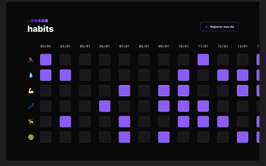

21 de Janeiro de 2023
Nlw Setup

O Nlw Setup foi o primeiro evento da Rocketseat em 2023 e também foi o
meu primeiro projeto na área de programação, ele consiste em um "Habit
Tracker" no qual você pode registrar o seu dia marcando em uma
checklist o que você fez naquele dia em especifico. Nesse projeto foi
usado HTML, CSS e JavaScript de uma forma bem simples pois foi o meu
primeiro contato com essas linguagens.